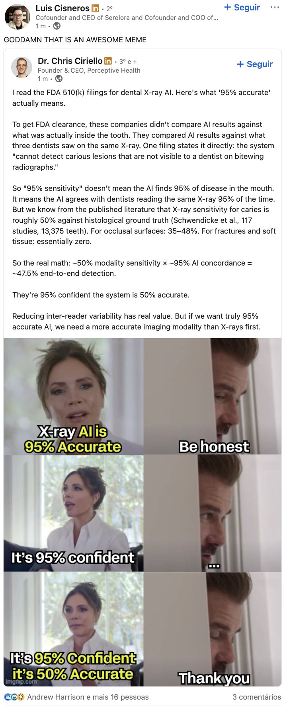
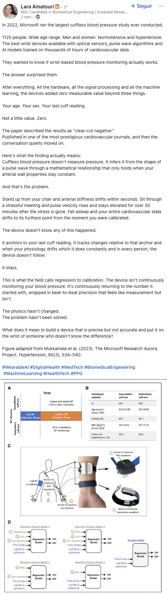
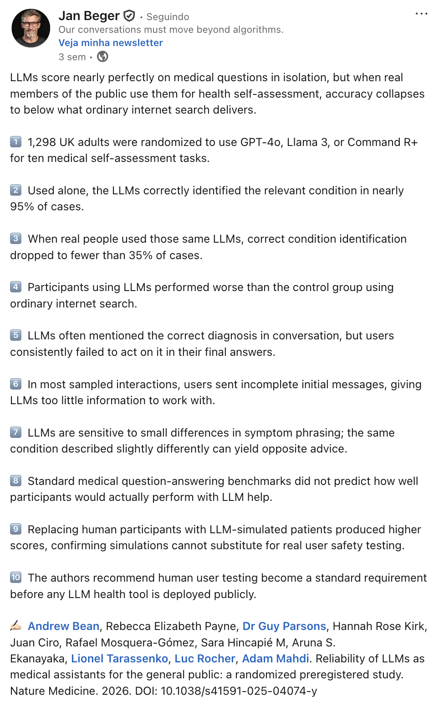
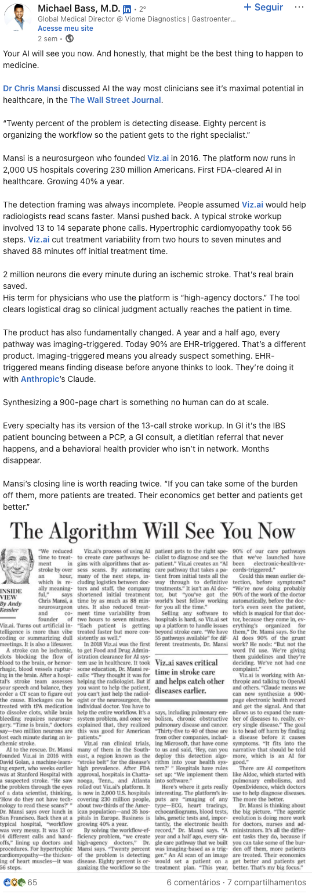
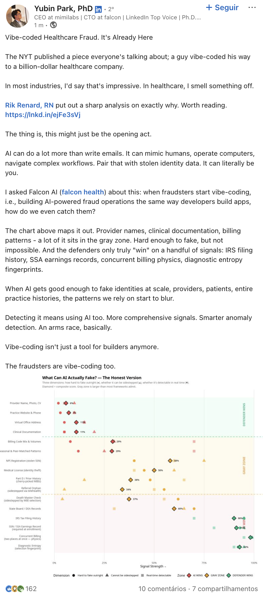
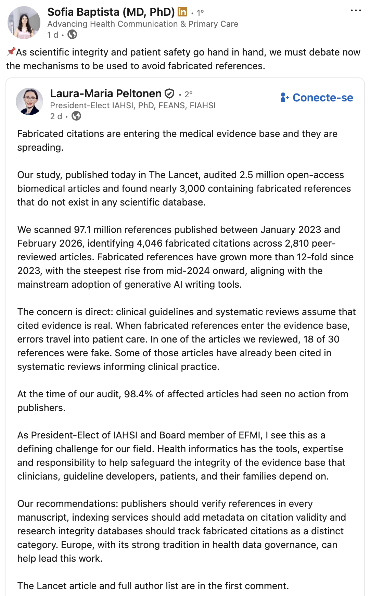

LLMs in Healthcare
Cases, the bedside, and the law
"How many of you used an LLM this week? And how would you know if it wasn't a good call?"
Not a rhetorical question. It's where this session lives.
The map for today
A strip at the top of every slide will keep these five labels in front of you.
Clinical evaluation of LLMs
Against what ground truth?
"Almost all of medicine is trying to get from 95% to 96, or 97. We spend trillions of dollars on it."
— Graham Walker, MD
"95% successful" is the baseline, not the target
Human biology is resilient. You can do many things to many people and 95% of them will be fine.
That's not a bar to clear — that's the starting line. Headlines saying "AI 95% successful in pilot" tell us almost nothing. Medicine lives in the margins between 95% and 97%, and that's where the trillions go.
A thought experiment
An algorithm that always refills any SSRI prescription, no clinical review.
What's its success rate?
≥ 95%
Because most patients on long-term SSRIs are stable. Most refill cycles don't require intervention. Most prescriptions aren't actively harmful.
The 5% it misses is the whole job
- Emerging side effects
- Drug interactions
- Mood deterioration / suicidality risk
- Polypharmacy creep
- Indication that no longer applies
"95% successful" is mute about the cases where the work matters.
"'95% sensitivity' doesn't mean the AI finds 95% of disease. It means the AI agrees with dentists reading the same X-ray 95% of the time."
— Dr. Chris Ciriello, on FDA 510(k) filings for dental X-ray AI
50% × 95% = 47.5%

Modality sensitivity (X-ray for caries vs. histology): ~50%.
AI concordance with dentists (what FDA 510(k) measures): ~95%.
End-to-end detection: ~47.5%.
"They're 95% confident the system is 50% accurate."
Same pattern, different specialties
Once you ask "compared with what?" you can't stop:
Concordance with an imperfect proxy ≠ clinical reality.
"Beat-to-beat precision that feels like measurement but isn't."
Microsoft 2022 cuffless BP study: 1,125 participants. Zero added value beyond age + sex + last cuff reading.
The cuffless BP failure mode

The wrist device anchors to the last cuff reading and tracks changes relative to that anchor.
When physiology drifts, the device stays.
The field has a name for this: regression to calibration.
Now apply that to LLMs
The model stays anchored. The world has moved.
The "precision" we feel in benchmark numbers may be artefact of anchoring, not signal.
Two papers in 2026, same question
Can LLMs perform like physicians?
Pre-registered, hundreds of physician baseline
Pre-registered, randomised
Both well-designed. Both in top journals. Opposite conclusions.
Brodeur et al. — Science, April 2026
OpenAI's o1-preview on NEJM Clinicopathological Conferences (CPCs) + a real-world Boston ER study, hundreds of physicians as baseline.
On the subset where GPT-4 had been tested before, o1-preview correct in 88.6% vs. GPT-4's 72.9% (p = 0.015).
"LLMs have eclipsed most benchmarks of clinical reasoning, motivating the urgent need for prospective trials."
Bean & Mahdi — Nature Medicine, February 2026
1,298 UK adults, randomised to GPT-4o / Llama 3 / Command R+ — or internet search of their choice (control) — for 10 medical scenarios.
- LLMs alone: 94.9% condition identification
- LLMs used by participants: <34.5%
- Participants with LLMs: no better than control
"Standard benchmarks for medical knowledge and simulated patient interactions do not predict the failures we find with human participants."
Side by side
Same year. Both pre-registered. Both honest. Both true.
"The benchmark and the bedside live in different worlds."
Eclipsing the test isn't eclipsing reality. The work is what happens between them.
What broke in the Bean-Mahdi study

- Standard benchmarks did not predict real failures
- LLM-simulated patients yielded inflated scores
- Slight phrasing change → opposite advice
- Users sent incomplete messages
- LLMs surfaced the right diagnosis; users didn't act on it
Reis et al. — what the listener does to the message
Pre-registered RCT, Nature Health 2026, n = 500. Participants simulated reporting symptoms to either a chatbot or a physician.
Mean suitability rating for triage (1–5 scale, GPT-5.2 as evaluator).
Same person degrades their input when they know it's AI.
Every time you hear "X% accuracy",
the first question is the only one that matters:
against what ground truth?
— a thread that runs through the rest of the talk
Regulation in practice
Where the line is — and isn't.
A live case: OpenEvidence in Europe

Today, if you open openevidence.com from anywhere in the EU or the UK, you see this page.
OpenEvidence is a medical search engine with AI-synthesised answers, popular among US clinicians — where it remains available.
In the EU and UK, it was available; it withdrew in 2026, citing the EU AI Act and adjacent regulation.
The obvious question
You can ask ChatGPT, Gemini, Claude — from your phone, right now, in this room — exactly the kinds of clinical questions OpenEvidence was set up to answer.
They'll answer.
None of them are blocked. None of them call themselves medical devices.
So what is the line?
"What turns information into a medical device is two things: the output is shaped to a specific clinical question, and the manufacturer presents it as supporting a diagnostic or therapeutic decision."
The same kind of clinical question, with a different declared intent, falls under a different rule.
The transatlantic split
EU — EMA + HMA (Aug 2024)
"Facilitate the safe, responsible and effective use of LLMs."
Gradual, principle-based framework. Articulates with AI Act + MDR. OpenEvidence withdrew from the EU/UK in 2026.
US — White House (Mar 2026)
"Congress should NOT create any new federal rulemaking body to regulate AI."
Federal preempts state laws. Sandboxes. Innovation by removing barriers.
"Direct oversight of narrowly focused AI tools coexists with widespread under-the-surface use of consumer AI platforms with uncertain data privacy and security practices."
— Ötleş, Murray, Beecy, Khalessi, Singh. NEJM AI, March 26, 2026 — "Health Systems Govern Only the Tip of the AI Iceberg"
While we govern the tip
Most of this use happens outside institutional oversight. Governance designed for use-case-specific tools is the wrong shape for general-purpose chat platforms.
"AI Act and GDPR give patients legal grounds to seek explanations of AI-driven medical recommendations, but neither framework specifies what a meaningful explanation requires in clinical practice."
— Ankolekar, JMIR 2026
Until someone defines a meaningful explanation,
the right to understand is unbuilt infrastructure.
— prompt for the room
Agents in healthcare
In production, in motion, in fraud.
Q1 2026 — eight launches in four months
Anthropic
Claude for Healthcare
Jan 11
OpenAI
ChatGPT → for Clinicians
Jan 7 / Apr 22
Microsoft
Copilot Health + MAI-DxO
Mar 12
Amazon
One Medical Health AI
Jan 21 · 200M Prime
Google DeepMind
Multimodal co-clinician
Apr 30
Salesforce + Epic
Agentforce + EHR agents
Mar / Apr
AWS
Connect Health (agentic)
May 5
Verily
Lightpath chronic care
Mar / Apr
One case in production at scale: Viz.ai

- 2,000 US hospitals, 230M covered
- Stroke workup: 13–14 calls → 7 min
- HCM: 56 steps → minutes
- Treatment 88 min faster
- 90% of pathways EHR-triggered using Claude
"AI can mimic humans, operate computers, navigate complex workflows. Pair that with stolen identity data. It can literally be you."
— Yubin Park, on vibe-coded healthcare fraud
Same capabilities, two sides

The eight Big Tech launches of Q1 2026 are capabilities.
Capabilities are fungible. What enables a workflow agent enables a fraud agent.
Detectors today: IRS filing history, SSA earnings, billing physics, "diagnostic entropy fingerprints".
Evidence under threat
What we cite — and whether it exists.
"4,046 fabricated citations in 2,810 papers. 1 in 277 papers in Q1 2026 contained at least one fabricated reference. 12× growth since 2023."
— Topaz et al., The Lancet 2026
An audit of biomedical reference integrity

Density of fabricated references over time:
- 2023: 1 in 2,828 papers
- 2025: 1 in 458
- Q1 2026: 1 in 277
2,471,758 papers audited. 125M+ references analysed. 98.4% of affected papers without publisher action. Review articles: 57% higher fabrication rate.
"Bixonimania" — a story to remember
A researcher invented a fake disease. Acknowledged "Professor Sideshow Bob". Wrote in the methods "this entire paper is made up". Posted as a preprint.
Four major AI chatbots told patients bixonimania was real.
The peer-reviewed paper that cited the fake preprints as "emerging clinical condition" was only retracted after Nature contacted the journal.
Real fabricated references don't come with a confession. They look correct.
"To audit 2.5 million papers and find LLM-generated fabricated citations, Topaz et al. used Claude 3.5 Haiku."
AI defending the evidence base from AI. Is that a lot, or a little?
And the layer above — the systematic review
If references are unreliable, can LLMs at least assess methodological quality? Nyrhi et al. tested 4 frontier models against published Cochrane RoB judgements:
| Model | RoB 1 κ | RoB 2 κ |
|---|---|---|
| DeepSeek v3 | 0.39 | 0.09 |
| ChatGPT o3 | 0.36 | 0.06 |
| Grok 3 | 0.34 | 0.10 |
| Gemini Flash 2.0 | 0.27 | 0.13 |
Sensitivity 0.05–0.55. Models systematically over-flag. Authors: "None sufficiently reliable for fully autonomous RoB assessment."
If references can't be trusted
and review-grade reasoning can't yet be delegated,
what stays of our ability to interpret what we read?
— prompt for the room
Physicians and clinical practice in 5 years
Deskilling, dependence, drift.
"Endoscopists who used AI for months and then worked without it: adenoma detection rate dropped from 28.4% to 22.4%. AI replaced no one. It eroded the baseline."
— Heudel et al. ESMO RWD 2026
What deskilling looks like across specialties
UK cytology after HPV primary screening: workloads down 80–85%, labs cut from 45 to 8. Training capacity for junior pathologists nearly disappeared.
The pair that defines the next decade
If the model gets better and the clinician gets worse, what is the clinical encounter in 2030?
Every clinician here was trained by working through cases
where the easy step was deferred to no one.
What replaces that pipeline?
— prompt for the room
Where this leaves us
- Every accuracy number deserves "against what ground truth?"
- Benchmarks and bedside live in different worlds — the work is connecting them
- Regulatory line for "medical device" is narrower than the capability — depends on declared intent
- Most clinicians use general-purpose AI; most of that use is unmonitored
- Healthcare agents are delivering workflow value (Viz.ai, scribes); same capabilities used adversarially
- Empirical evidence of deskilling after AI exposure across several specialties
- The evidence base itself is being polluted — and our defences depend on the same tools
Thank you
marianacpais@gmail.com